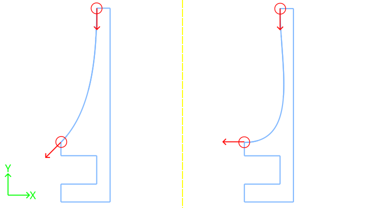

Simple Optical Breadboard Raspberry Pi Support

An idiot admires complexity, a genius admires simplicity
– Terry A. Davis
The problem here was mounting a Raspberry Pi streaming from a digital camera in an optical setup to a display. Simply leaving the Pi dangling off the setup is cheap and sloppy. For prototyping, however, a fully enclosed, polished mount is not only unnecessary but even undesirable, as it hinders probing and rewiring.
In this context, the mount only needs to hold the device, nothing more. Ideally, it shouldn’t take up breadboard real estate as this is valuable. It should also be easy to move or remove without tools.
Finally, in my prototyping philosophy, moving fast is king. Developing and testing quickly matters more than chasing a perfect (and often unattainable) solution. Optimizations should come later.
Fifteen minutes of CAD, half an hour of 3D printing (for the pair), and this was the result:
Here is the cadquery code that generates this object:
#!/usr/bin/env python3
import cadquery as cq
from cadquery.vis import show
# Part parameters
s_height = 60.0 # mm, support height above plate surface
s_width = 22.0 # mm, support width
s_thick = 12.0 # mm, support thickness
bt_thick = 8.0 # mm, bottom tab thickness // gap offset
plate_thick = 12.7 # mm, breadboard thickness
slot_depth = 16.0 # mm, how far the part "bites" the breadboard
ph_spacing = 49.0 # mm, pi mounting hole spacing
ph_offset = 6.0 # mm, pi hole offset from plate top surface
# Hardware parameters (counterbores)
screw_dia = 3.2
screw_cap_dia = 6.0
total_height = bt_thick+plate_thick+ph_offset+s_height
body_sketch = (cq.Sketch()
.segment((0,0), (s_width, 0))
.segment((s_width,0), (s_width, total_height))
.segment((s_width, total_height), (slot_depth, total_height))
.spline([(slot_depth, total_height), (0, bt_thick+plate_thick+ph_offset)],
[(0, -1), (-1, -1)], False)
.segment((0, bt_thick+plate_thick+ph_offset), (0, bt_thick+plate_thick))
.segment((0, bt_thick+plate_thick), (slot_depth, bt_thick+plate_thick))
.segment((slot_depth, bt_thick+plate_thick), (slot_depth, bt_thick))
.segment((slot_depth, bt_thick), (0, bt_thick))
.close()
.assemble()
)
support = (cq.Workplane("YZ").placeSketch(body_sketch).extrude(s_thick/2.0, both=True)
.faces("<Y").workplane()
.pushPoints([(0, bt_thick+plate_thick+ph_offset),
(0, bt_thick+plate_thick+ph_offset+ph_spacing)])
.cboreHole(screw_dia, screw_cap_dia, slot_depth+2.0)
)
show(support)
The code is not much different then others seem before on this blog. The general protocol is the same as point and click CAD:
- Try to come up with a sketch that defines most of the object,
- Extrude it
- Apply the remaining 3d operations.
The most exotic line today, is the one that creates the spline:
- A spline is defined by a list of points, and a list of vectors that will define the tangent line from this points. For example, this design has the spline starting at the top with a line tangent to a vector pointing down [(0, -1)], and arriving at the end point with a line tangent to a vector at 225 degrees, given by [(-1, -1)]
.spline([(slot_depth, total_height), (0, bt_thick+plate_thick+ph_offset)],
[(0, -1), (-1, -1)], False)
This is illustrated on the figure on the left. Just as an auxiliary example, on the right figure we see the output if the vector at the end point would point straight at negative direction along X axis (-1, 0).

The boolen False in the end is about the “periodic” argument. One uses
- False → to get open curves, as in “draw a curve from A to B”
- True → to get a closed loop, as in “draw a loop that comes back to A smoothly”
It is mandatory to pass one of the two as it will also tell the dispacther to use the overload method that takes tangents.
Note that I intentionally defined the spline minimalistically, using only two points (the start and end) but it can accept as many points as you wish.
Some final photos of the mount in use:


Standoffs makes it easy to mount different add-on boards on top of the Pi.
As the mount itself just attaches to the edge of the plate, it wastes almost no space on the breadboard. Furthermore, it is easy and convenient to relocate when the setup changes as no tools are needed. 😎
📎 Download: Raspberry Pi Optical Breadboard Mount
Post Scriptum
The initial quote by Terry A. Davis, as seen on this youtube cut, in full:
An idiot admires complexity, a genius admires simplicity, a physicist tries to make it simple. Anyway, an idiot anything the more complicated it is, the more he will admire it. If you make something so clusterfucked he can’t understand it, he’s gonna think you’re a god cause you made it so complicated nobody can understand it. That’s how they write journals in Academics, they try to make it so complicated people think you’re a genius